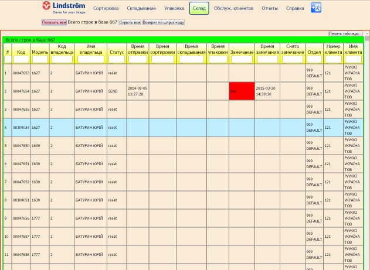

Bonfire
Страница сверстана по .PSD макету.
Адаптивная по ширине от 600 до 940 px. Добавлен скрипт для слайдеров.
Bonfire
Страница сверстана по .PSD макету.
Адаптивная по ширине от 600 до 940 px. Добавлен скрипт для слайдеров.
Ссылка на страницу.
Репозиторий:github.com/git-kovalenko/web-page-bonfire/
- Html5/CSS3
- JS/Jquery

База данных спецодежды ID Reader
Проект разработан для учета оборота спецодежды между подрядчиком и заказчиком. Веб интерфейс работает со
сканером штрих-кодов, автоматически связываясь с базой данных MySQL на сервере. Реализовано разграничение прав пользователей,
учтены все требования заказчика по взаимодействию пользователей с базой данных, в том числе импорт в базу данных из .txt файла,
а также выборка по параметрам с генерацией отчета в формате файла Excel. Подробнее: Справка по работе с базой данных ID Reader
Демонстрационная страница проекта.
- Html5/CSS3
- JS/Jquery
- PHP/Kohana
- PHPExcel
- MySQL
 Ход лучей в интегрирующей сфере
В проекте реализовано 2-мерное моделирование лучей светодиода внутри сферы, покрытой изнутри светорассеивающим материалом.
Сфера имеет перегородку, размер и положение которой можно изменять мышью. Для отрисовки сферы использован <canvas>, график освещенности выводится
с помощью JS библиотеки AmCharts или Google Charts.
Ход лучей в интегрирующей сфере
В проекте реализовано 2-мерное моделирование лучей светодиода внутри сферы, покрытой изнутри светорассеивающим материалом.
Сфера имеет перегородку, размер и положение которой можно изменять мышью. Для отрисовки сферы использован <canvas>, график освещенности выводится
с помощью JS библиотеки AmCharts или Google Charts.
Страница проекта sphere.3d-foto.in.ua
Репозиторий:github.com/git-kovalenko/sphere/
- Html5/CSS3
- JS/Jquery
- AmCharts
- Google Charts